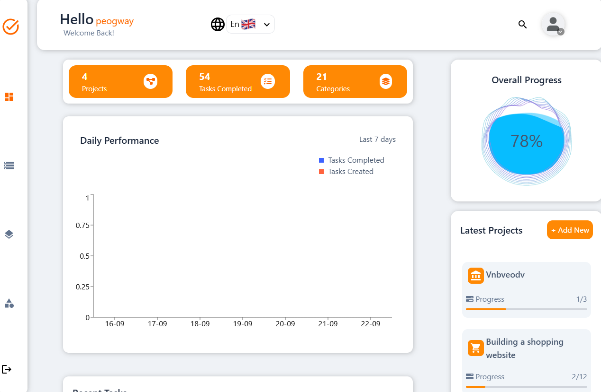
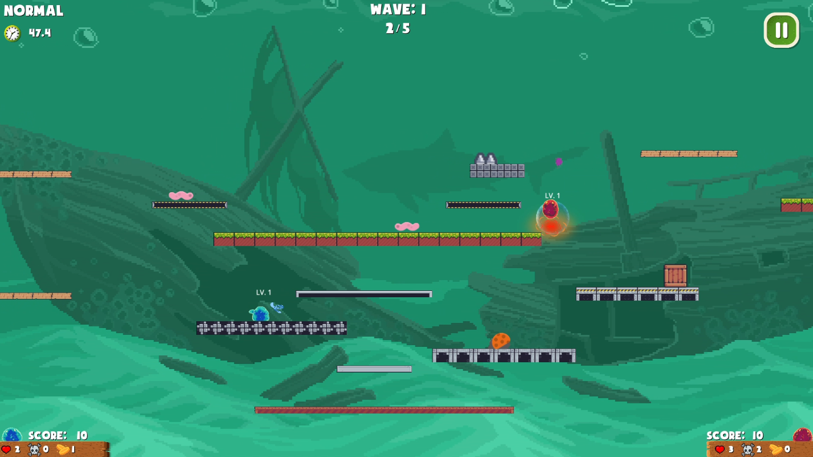
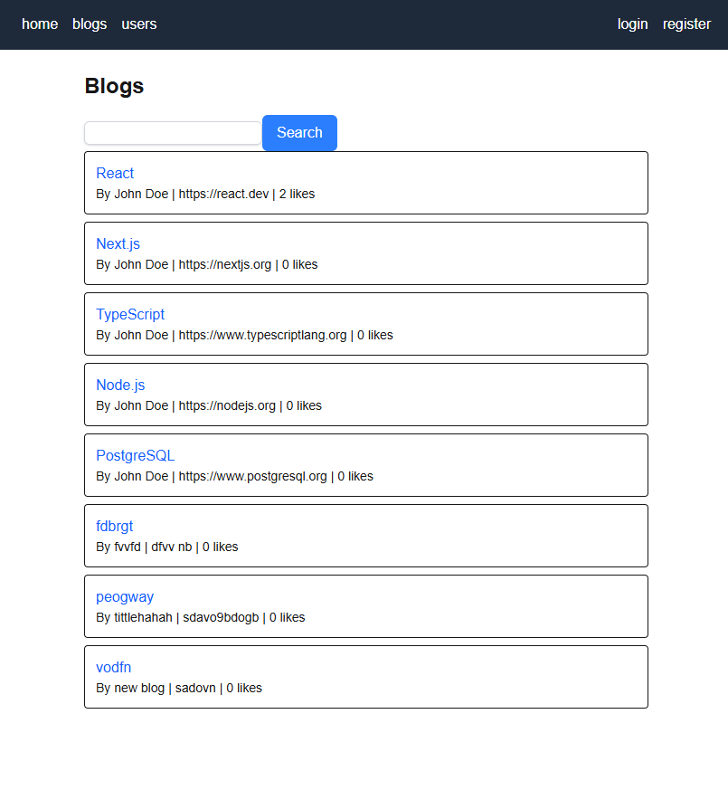

Keys2Balance Oy
Web Developer
Dec 2025 — May 2026Remote | Hämeenlinna, Finland
Worked in a 9‑person agile Scrum team to build Keys2Balance's training platform — a full‑stack learning management system with Admin, Trainer, and Participant roles — from scratch. Developed features across the React/Redux frontend and the Node.js/Express backend, integrated them with a PostgreSQL database, and helped deploy the application to production on Fly.io. Took part in daily stand‑ups, sprint planning, and retrospectives, ran frontend tutorials to align the team on structure and style, reviewed teammates' code, and helped keep integration and code quality on track through the final sprints.
- React
- Node.js
- PostgreSQL
- Express.js
- JavaScript
- Git
- Teams
- Jira
- Postman
- REST API
- Fly.io
- Neon
- Figma

Project Management Website
Self Project
Jul 2025Self-directed
A project management web app built with React, Express, and MongoDB. Users can create and categorize projects, manage tasks with priorities, sort by name, time, or priority, view recent completions, and track overall progress.

Project demo: Demo
Source code: Source code
- React
- Node.js
- MongoDb
- Express.js
- JavaScript
- Git
- Nodemon
- Postman
- REST API
- Fly.io

Slime Adventure
Self Created Game
Sep 2025Self-directed
Developed a 2D action-survival platformer in Godot 4 using GDScript as a self-directed game development project. Built core gameplay systems from scratch, including player movement, combat, combo attacks, enemy waves, power-ups, upgrades, physics, and local 2-player co-op. Trained a reinforcement-learning pathfinding model in Python and integrated it into the game to control dynamic enemy chase behavior. Worked across gameplay programming, AI integration, game systems, and overall project development from concept to a playable final build.

Demo video: Demo video
Live game: Live game
Source code: Source code
- Godot Engine
- GDScript
- GDShader
- C#
- Python
- Git

Blog App Website
Self Project
August 2026Self-directed
Developed a full-stack blog-sharing web app in Next.js (App Router) and TypeScript as a self-directed project. Built the complete feature set from scratch, including credential-based authentication with NextAuth and bcrypt password hashing, a PostgreSQL database schema managed with Drizzle ORM, and server actions for creating and liking blogs, managing user profiles, and maintaining a personal reading list. Styled the UI with Tailwind CSS and wrote end-to-end tests with Playwright to validate core user flows. Worked across frontend, backend, database design, and testing to take the project from schema design to a fully functional deployed app.

Deployed website: Demo
Source code: Source code
- Next.js
- React
- TypeScript
- Tailwind CSS
- NextAuth
- Drizzle ORM
- PostgreSQL
- Neon
- Playwright
- Git